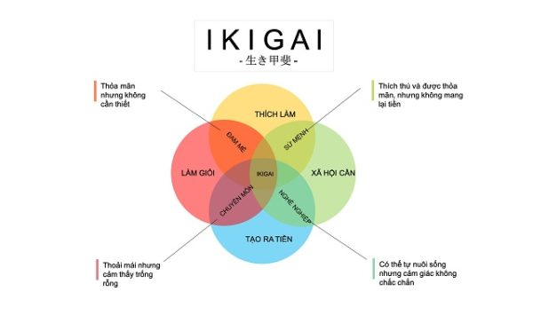

Bài toán khó nhất của sinh viên
"Em không biết mình muốn làm gì" — đây có lẽ là câu nói phổ biến nhất trong các buổi tư vấn hướng nghiệp ở Việt Nam. Chọn ngành sai, học xong rồi mới phát hiện ra mình không thích — đây là thực trạng của hàng trăm nghìn sinh viên mỗi năm.
Nhưng việc chọn ngành không cần phải là một canh bạc. Có những câu hỏi đúng đắn, những công cụ tư duy và những dữ liệu thực tế giúp bạn đưa ra quyết định có căn cứ — thay vì đi theo cảm hứng nhất thời hoặc áp lực từ gia đình.
Ngày hội tư vấn tuyển sinh ngành nghề tại Đại học Tôn Đức Thắng (Nguồn: TDTU)
Framework Ikigai: 4 câu hỏi thay đổi cuộc đời
Người Nhật có một khái niệm gọi là Ikigai (生き甲斐) — lý do tồn tại. Khi áp dụng vào chọn nghề, nó trở thành giao điểm của 4 yếu tố cốt lõi:
Bạn giỏi điều gì?
Kỹ năng, điểm mạnh tự nhiên, những việc bạn làm tốt hơn người khác một cách rõ rệt. Không nhất thiết phải là thứ bạn thích.
Bạn yêu thích điều gì?
Việc gì khiến bạn mất khái niệm về thời gian khi làm? Chủ đề gì bạn đọc tự nguyện, không ai bắt?
Thế giới cần gì?
Vấn đề xã hội nào cần giải quyết? Ngành nào đang thiếu nhân lực? Xu hướng nào đang trỗi dậy?
Ai sẽ trả tiền cho bạn?
Thị trường lao động ra sao? Mức lương trung bình? Cơ hội thăng tiến? Ngành này phát triển hay đang thu hẹp?
💡 Ngành nghề lý tưởng nằm ở giao điểm cả 4 yếu tố trên. Chỉ giỏi mà không yêu thích → burnout. Chỉ yêu thích mà không có thị trường → không sống được. Cân bằng cả 4 → bền vững lâu dài.

Sơ đồ Ikigai — phương pháp tìm kiếm nghề nghiệp có ý nghĩa của người Nhật
6 bước thực tế để chọn ngành không hối hận
- Tự kiểm kê bản thân: Viết ra 10 việc bạn làm tốt và 10 việc bạn thích làm. Tìm phần giao nhau. Làm bài test MBTI, Holland Code (RIASEC) hoặc StrengthsFinder để có thêm góc nhìn khách quan.
- Nghiên cứu thị trường lao động: Xem LinkedIn Jobs, ITviec, VietnamWorks — ngành nào đang tuyển nhiều? Mức lương ra sao sau 3–5 năm kinh nghiệm? Công cụ hữu ích: Vietnam Skills Report, Navigos Research.
- Nói chuyện với người trong nghề: Kết nối với ít nhất 3 người đang làm ngành bạn quan tâm qua LinkedIn hoặc alumni của trường. Hỏi về công việc hàng ngày thực sự, không phải những gì quảng cáo.
- Thử nghiệm thực tế: Intern, làm part-time, tham gia CLB chuyên ngành, làm dự án nhỏ. Không có cách nào biết mình có thích nghề đó không bằng cách thực sự làm nó.
- Đánh giá chương trình đào tạo: Xem syllabus thực tế của trường, không chỉ tên ngành. Hỏi tỷ lệ có việc làm sau tốt nghiệp. Xem đội ngũ giảng viên có kinh nghiệm thực tiễn không.
- Chấp nhận điều chỉnh: Không có lựa chọn nào là hoàn hảo 100% ngay từ đầu. Quan trọng là bạn có roadmap rõ ràng và sẵn sàng học thêm kỹ năng theo thị trường. Nghề nghiệp là hành trình, không phải điểm đến cố định.
⚠️ Những sai lầm phổ biến cần tránh: Chọn ngành theo trend nhất thời (hôm nay hot, 4 năm sau chưa chắc); chọn vì lương cao mà bỏ qua sự phù hợp; nghe lời gia đình mà không tự tìm hiểu; và nghĩ rằng một lựa chọn là mãi mãi — thực tế, 30% người đi làm đã chuyển ngành ít nhất một lần.
Ngành nào đang có nhiều cơ hội ở Việt Nam 2026?
Dựa trên dữ liệu tuyển dụng thực tế, những lĩnh vực có nhu cầu nhân lực cao và mức lương tốt bao gồm: Công nghệ thông tin (đặc biệt AI/ML, Cybersecurity, Cloud), Y tế và Dược phẩm, Logistics và Chuỗi cung ứng, Tài chính - Fintech, và Năng lượng tái tạo.
Tuy nhiên, đây chỉ là xu hướng — không phải công thức. Bạn giỏi và yêu thích lĩnh vực nào, tập trung phát triển sâu ở đó. Người giỏi nhất trong ngành "bình thường" luôn kiếm được nhiều hơn người trung bình trong ngành "hot".
Kết luận: Chọn nghề là chọn cuộc sống
Bạn sẽ dành khoảng 90.000 giờ trong cuộc đời để đi làm — tương đương 1/3 cuộc sống tỉnh thức của bạn. Đó là lý do tại sao chọn đúng nghề quan trọng không kém chọn đúng người yêu. Đừng vội, đừng theo đám đông, và đừng sợ thử sai.
Bắt đầu bằng việc hỏi đúng câu hỏi, tìm kiếm đúng thông tin và dám thử nghiệm thực tế. Sự rõ ràng về nghề nghiệp không đến từ việc ngồi suy nghĩ — nó đến từ hành động.